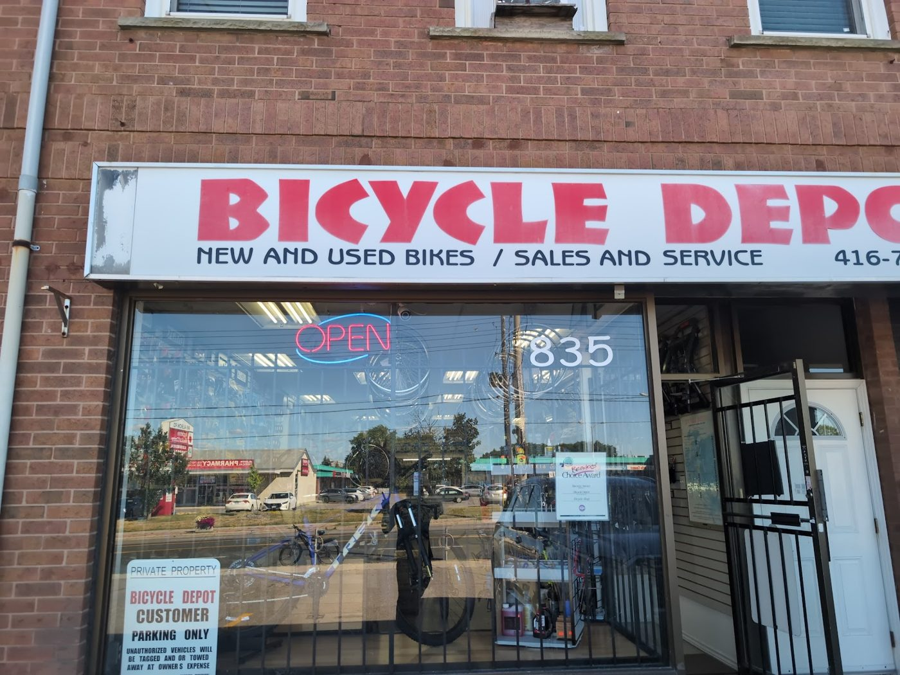

Bike shop & repairs · Albion Rd, Etobicoke · Since 1997
Bikes fixed fast, by people who love bikes.
Rick and Rob have been fixing bikes on Albion Road since 1997. Bring in a flat, a brake problem or a full refit, and reviewers say you’ll often ride away the same day.
- Same-day repairs
- Flats & brakes
- New bikes & accessories
- Run by Rick & Rob
What we do
Repairs & tune-ups
Flats, brakes, cables, drivetrains and annual servicing. Several reviewers say small jobs were done while they waited, and one says a full refit was ready the same evening.
Fit & upgrades
Handlebars, risers, shifters, brake levers, derailleurs and saddles, swapped to suit how you ride, as one reviewer describes for his Trek Domane.
Bikes & accessories
New bikes (reviewers mention Norco and Raleigh), plus helmets, shoes, gloves, saddles, lights and parts, as seen in the shop’s Google photos.
This list comes from the shop’s Google listing (categories: bicycle shop, bicycle repair shop), its photos and its reviews. No prices are listed because the shop doesn’t publish a price list online. Call for a quote.
Our story
Two brothers, one passion
Since 1997
Twin brothers Rick and Rob Din came to Canada from Guyana in 1991 and started out as bike mechanics. In 1997 they opened Bicycle Depot. Their motto: “Fixing your bike is our passion.”
“I cant get over the level of service Rick and Rob provided.”
Ryan H, Google review. History from the shop’s own former website (archived December 2024).
What customers say
4.7 ★ from 559 Google reviews (checked Nov 9, 2026). Quotes are word for word. Each one says where it was read: on the Google listing itself, or on a public page that copies reviews. Google shows only a handful of reviews without signing in, so some quotes come from a directory copy that doesn’t show reviewer names.
★★★★★
Im 65 and was having some comfort issues riding my Trek Domane 3. Rick and Rob suggested keeping the bike and modifying it for my riding style. We changed the handlebars, added a riser, swapped out the shifters and brake levers, changed the derailer, changed the seat, added some accessories, and completed the usual annual servicing. What a difference. The bike looks great as well; as if it came from Trek with those mods on it already. I took it there on a Tuesday afternoon at 330 pm. They called me at 6 pm that same day to come and pick it up. They insisted I take it for a ride to make sure it was exactly the way I wanted it. They offered to trade some accessories for the old parts and insisted I take them with me if I would rather have them. (We traded).
I cant get over the level of service Rick and Rob provided. I cant believe how fast they got the project all together and me on my way. I also was very happy with the cost of it all too, I would have thought it would be much more to do those mods. These guys are the epitome of customer service!!!
★★★★★
Rick and Rob are very experienced, observant and careful bike repairmen. Every time I go, they set me up with high quality, durable parts; knowledge and information; and great customer service. They always make small adjustments and improvements to my bike for free, and you can tell how passionate they are by how long they've been in business (over a decade!). I feel as though my bike has improved in quality and comfort over the years of bringing it to Bike Depot. The selection of bikes for sale includes Norco and Raleigh. Their prices are fair, especially compared to many of the downtown bike shops. Support your local businesses and take good care of your bike by bringing it to the pros.
★★★★★
I'm glad, that I've brought my bicycle with multiple issues in here. 👍🏻Rob and Rick have amazed me, how knowledgeable they are identifying problems, , then professionally finding most efficient and not expensive🫰 ways to get them fixed, and unbelievable quickly repairing it. Thay were able to fix few bikes including mine in no time. After their service my bike 🚲 feels like new! If I'll need repair in the future, definitely I'll bring it in here. Thanks 🙏.
★★★★★
Rick and Rob are amazing.. just met them last year and I have no doubt I will be a long lasting loyal customer. They are genuine, humble and professionals in every aspect of Bicycles and service. I whole heartedly trust them and all they have to offer when taking care of mine and my family’s bicycle needs. Thanks guys! Keep up the great work 👍👍
★★★★★
Greatly Happy, I was able to finish this project with reinsurance of the parts I needed & knowledgeable understanding of it ! Him & his team were able get it done. Well priced for a Company coming out of Covid
★★★★★
Fixed my flat tire in 10 minutes for a reasonable 30 bucks and fixed my brakes and clipped my brake wire for free! I bought my bike from Canadian Tire, and my warranty expired by the time I took it there, and they were charging me 100 bucks plus and 50 bucks just for labor! This will be my go to repair shop. Fixed at a very reasonable price!
★★★★★
Bicycle Depot truly impressed me with their professionalism and speed. I went in for a simple adjustment, and unlike many other shops that quoted a turnaround time of 1–3 days, they handled it on the spot, so quickly that I didn’t even have time to grab a coffee. It was done in seconds. The staff was very friendly and clearly experienced. I was referred to them by an avid cyclist who’s been in the local scene for years, and I can see why. With nearly three decades in business, they know what they’re doing and treat customers with care and respect. A true local gem for cyclists in the area.…
★★★★★
🌟🌟🌟🌟🌟 I spent so much at other places without real answers, but in under 20 minutes, Bicycle Depot figured it out and gave me what feels like a brand new bike. The owner and the team were honest, kind, and genuinely sincere with me. I should’ve paid more, but they charged fairly and treated me with respect. I left feeling so happy and relieved — truly grateful.
★★★★★
Rick and Rob are one of the most humble and genuine people I ever met. I came to the his shop to get my mountain bike fixed and was also searching for a new hybrid bike. Rob took his time to explain which bike will be the most suitable one for me. Rick went above and beyond and fixed my mountain bike and additional components. I was able to buy a new bike at a very good price and get my old bike fixed as well. I would definitely recommend coming to this shop for any repairs or advice on a new bike. Keep up the great work!
★★★★★
I visited this store early morning just when it opens and trust me within 15 minutes I was done with my work. Too quick and easy flow. I had a flat tire and had to be fixed and the guy just did it in minutes, charged me the amount (30bucks) pretty reasonable and without wasting more time, got my work done. Appreciate the quick work and the energy inside the store. Wonderful service ! Amazing work ! Must visit for any problems regarding cycle/Electric bikes.
★★★★★
One of the Best bike shop and repairs around the city . My flat tire was fixed within minutes. I highly recommend this place for any bike needs.
In the shop
Real photos from Bicycle Depot’s public Google listing and its customers’ reviews. Tap to enlarge.
Visit the shop
835 Albion Rd
Etobicoke, ON M9V 1A3
| Monday | 11 a.m.–7 p.m. |
|---|---|
| Tuesday | 11 a.m.–7 p.m. |
| Wednesday | 11 a.m.–7 p.m. |
| Thursday | 11 a.m.–7 p.m. |
| Friday | 11 a.m.–7 p.m. |
| Saturday | 10 a.m.–6 p.m. |
| Sunday | Closed |
These are the hours on Google today. Closed Sundays. Hours can change with the season, so call ahead if you’re coming near closing.